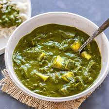

Palak Paneer

Discription
Palak Paneer is one of the most popular Indian dish made with succulent Paneer cubes (Indian cottage cheese) in a smooth spinach sauce.
Ingrediants
- Cooking spray
- ½ pound paneer, cubed
- 2 tablespoon canola oil
- 1 teaspoon cumin seeds
- 1 ½ cups water
- 1 (10 ounce) spinach
- 1 large tomato,diced
- 3 clove garlic
- 2 dried red chile peppers, or to taste
- 1 tablespoon chopped fresh ginger root
- 1 table spoon curry powder
- 1 teaspoon ground coriander
- 1 ground tumeric
- 1 pinch taste
Directions
- Step 1
- Heat a skillet coated with cooking spray over medium heat; fry paneer cubes until lightly browned on each side, about 5 minutes. Transfer paneer to a bowl.
- Step 2
- Heat 1 tablespoon canola oil in the same skillet used to cook paneer over medium heat. Add cumin seeds and cook until seeds are slightly red. Stir water, spinach, tomato, garlic, chile peppers, ginger, curry powder, ground coriander, and ground turmeric into cumin seeds. Season with salt.
- Step 3
- Bring spinach mixture to a boil and simmer until garlic is very soft, 15 to 20 minutes. Remove from heat and allow mixture to cool.
- Step 4
- Transfer spinach mixture to a blender or food processor; puree until smooth.
- Step 5
- Heat remaining 1 tablespoon canola oil in a saucepan over medium heat; add spinach puree and paneer cubes. Simmer until hot, about 5 minutes.
Serve it with a dressing cream , hot and it eat with rice or chappati.
Thank You